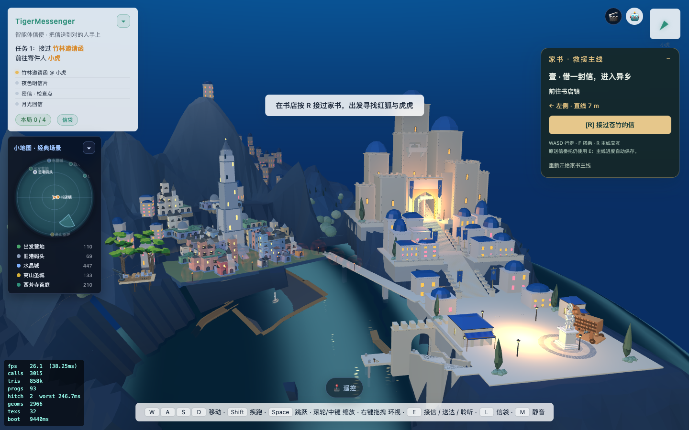
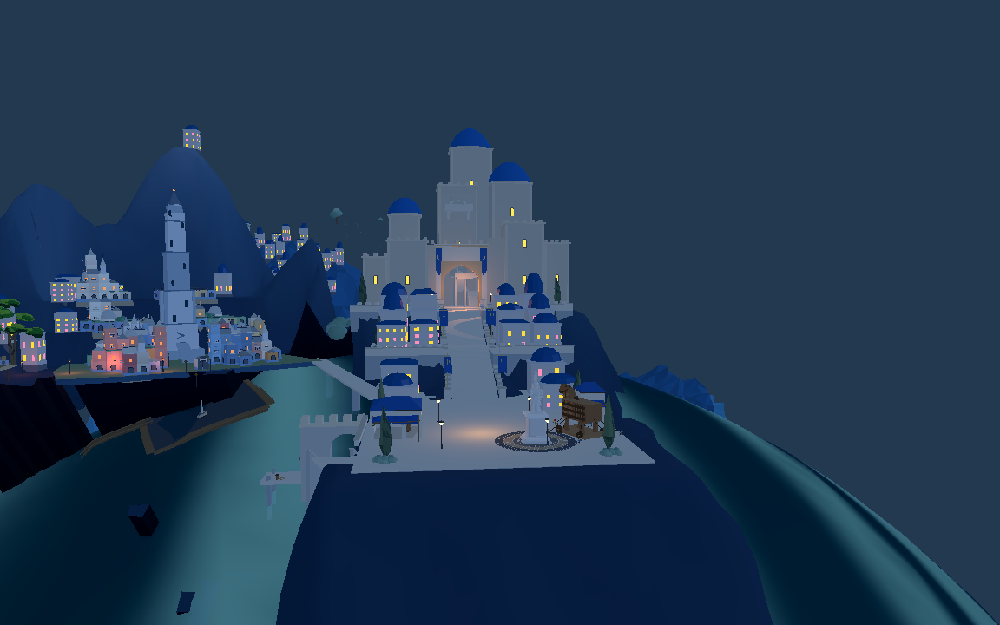
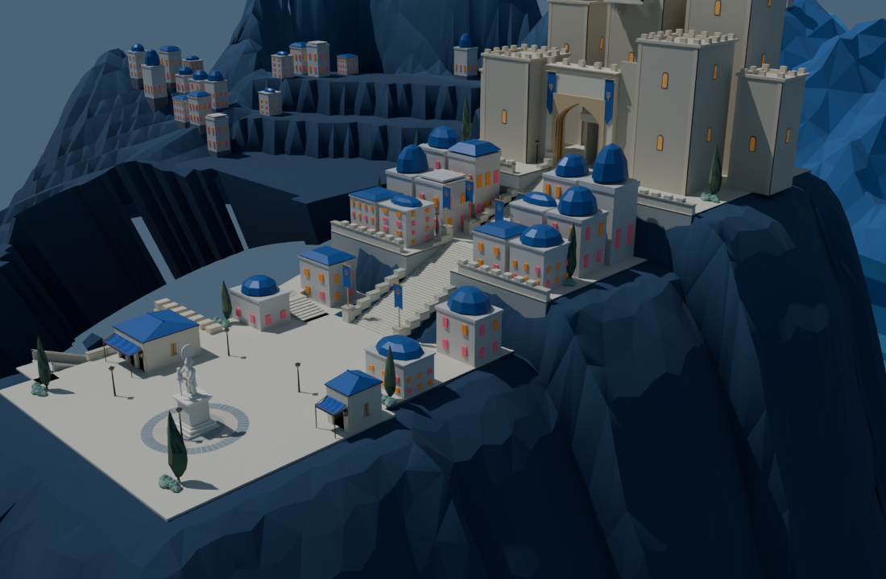
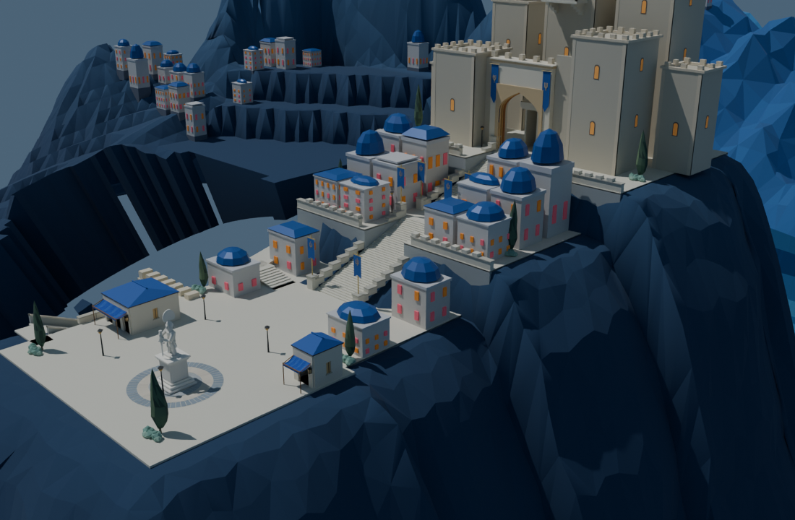

Web原12度已调整为30度，重新导出旧城可见建筑与当前山体。Godot实际12个建筑层和台地均检查为30度。新城顺时针30度尚未实施。


新地形基底v4，r09和r10两轮实际修形；r10共1335处变更完整匹配。下面为局部山岩审阅，不包括原旧城全部建筑与原木马，不能当作完整双城渲染。


旧城184处建筑占地、736角点支撑通过，原短剑兵在Godot完成754点路线。仍需新城朝向、进一步山势衔接、木马高台、完整上下船和目标图美术迭代。